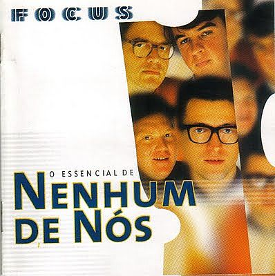

A lua inteira agora é um manto negro, ô-ô O fim das vozes no meu rádio, ô-ô São quatro ciclos no escuro deserto do céu Quero um machado pra quebrar o gelo, ô-ô Quero acordar do sonho agora mesmo, ô-ô Quero uma chance de tentar viver sem dor Sempre estar lá, e ver ele voltar Não era mais o mesmo Mas estava em seu lugar Sempre estar lá, e ver ele voltar O tolo teme a noite Como a noite vai temer o fogo Vou chorar sem medo Vou lembrar do tempo De onde eu via o mundo azul A trajetória escapa o risco nu, u-uh As nuvens queimam o céu, nariz azul, u-uh Desculpe estranho, eu voltei mais puro do céu A lua, o lado escuro, é sempre igual, al-al No espaço a solidão é tão normal, al-al Desculpe estranho, eu voltei mais puro do céu Sempre estar lá, e ver ele voltar Não era mais o mesmo Mas estava em seu lugar Sempre estar lá, e ver ele voltar O tolo teme a noite Como a noite vai temer o fogo Vou chorar sem medo Vou lembrar do tempo De onde eu via o mundo azul Estar lá, e ver ele voltar Não era mais o mesmo Mas estava em seu lugar Sempre estar lá, e ver ele voltar O tolo teme a noite Como a noite vai temer o fogo Vou chorar sem medo Vou lembrar do tempo De onde eu via o mundo azul
Goin' home, late last night Suddenly I got a fright Yeah, I looked through a window and surprised what I saw Fairies with boots and dancing with a dwarf All right now! Yeah, fairies wear boots and you gotta believe me Yeah, I saw it, I saw it, I tell you no lies Yeah, fairies wear boots and you gotta believe me I saw it, I saw it with my own two eyes All right now! Yeah, fairies wear boots and you gotta believe me Yeah, I saw it, I saw it, I tell you no lies Yeah, fairies wear boots and you gotta believe me I saw it, I saw it with my own two eyes All right now! So I went to the doctor, see what he could give me He said, "Son, son, you've gone too far 'Cause smokin' and trippin' is all that you do" Yeah!
She says, she's no good with words but I'm worse Barely stuttered out a joke of a romantic stuck to my tongue Weighed down with words too overdramatic Tonight it's "It can't get much worse" Vs. "No one should ever feel like" I'm two quarters and a heart down And I don't wanna forget how your voice sounds These words are all I have so I'll write them So you need them just to get by Dance, dance We're falling apart to half time Dance, dance And these are the lives you love to lead Dance, this is the way they'd love If they knew how misery loved me You always fold just before you're found out Drink up it's last call Last resort, but only the first mistake, and I I'm two quarters and a heart down And I don't want to forget how your voice sounds These words are all I have so I'll write them So you need them just to get by Why don't you show me a little bit of spine You've been saving for his mattress, love Dance, dance We're falling apart to half time Dance, dance And these are the lives you love to lead Dance, this is the way they'd love If they knew how misery loved me Why don't you show me a little bit of spine You've been saving for his mattress (Mattress, mattress) I only want sympathy in the form of you Crawling into bed with me Dance, dance We're falling apart to half time Dance, dance And these are the lives you love to lead Dance, this is the way they'd love (Way they'd love) Dance, this is the way they'd love (Way they'd love) Dance, this is the way they'd love If they knew how misery loved me Dance, dance Dance, dance Dance, dance Dance, dance
Give it to me baby uh huh uh huh Give it to me baby uh huh uh huh Give it to me baby uh huh uh huh And all the girlies say I'm pretty fly for a white guy Uno, dos, tres, cuatro, cinco, cinco, seís You know it's kinda hard just to get along today Our subject isn't cool but he fakes it anyway He may not have a clue and he may not have style But everything he lacks well he makes up in denial So don't debate, a player straight You know he really doesn't get it anyway Gonna play the field, and keep it real For you no way, for you no way So if you don't rate, just overcompensate At least you'll know you can always go on Ricki Lake The world needs wannabes Hey, hey, do that brand new thing! Give it to me baby, uh huh, uh huh Give it to me baby, uh huh, uh huh Give it to me baby, uh huh, uh huh And all the girlies say I'm pretty fly for a white guy He needs some cool tunes, not just any will suffice But they didn't have Ice Cube so he bought Vanilla Ice Now cruising in his Pinto, he sees homies as he pass But if he looks twice, they're gonna kick his lily ass! So don't debate, a player straight You know he really doesn't get it anyway Gonna play the field, and keep it real For you no way, for you no way So if you don't rate, just overcompensate At least you'll know you can always go on Ricki Lake The world loves wannabes Hey, hey, do that brand new thing! Now he's getting a tattoo yeah, he's getting ink done He asked for a 13, but they drew a 31 Friends say he's trying too hard and he's not quite hip But in his own mind he's the, he's the dopest trip Give it to me baby, uh huh, uh huh Give it to me baby, uh huh, uh huh Give it to me baby, uh huh, uh huh Uno, dos, tres, cuatro, cinco, cinco, seís So don't debate, a player straight You know he really doesn't get it anyway Gonna play the field, and keep it real For you no way, for you no way So if you don't rate, just overcompensate At least you'll know you can always go on Ricki Lake The world needs wannabes The world loves wannabes Let's get some more wannabes Hey, hey, do that brand new thing!
When we were young, the future was so bright Woah-oh The old neighborhood was so alive Woah-oh And every kid on the whole damn street Woah-oh Was gonna make it big and not be beat Now the neighborhood's cracked and torn Woah-oh The kids are grown up, but their lives are worn Woah-oh How can one little street swallow so many lives? Chances thrown Nothing's free Longing for used to be Still it's hard, hard to see Fragile lives Shattered dreams (Go!) Jamie had a chance, well she really did Woah-oh Instead she dropped out and had a couple of kids Woah-oh Mark still lives at home 'cause he's got no job Woah-oh He just plays guitar and smokes a lot of pot Jay commited suicide Woah-oh Brandon OD'd and died Woah-oh What the hell is going on? The cruelest dream, reality Chances thrown Nothing's free Longing for used to be Still it's hard, hard to see Fragile lives Shattered dreams (Go!) Chances thrown Nothing's free Longing for (what) used to be Still it's hard, hard to see Fragile lives Shattered dreams
Baby you're all that I want When you're lyin' here in my arms I'm findin' it hard to believe We're in heaven And love is all that I need And I found it there in your heart It isn't too hard to see We're in heaven Oh, thinkin' about all our younger years There was only you and me We were young and wild and free Now nothin' can take you away from me We've been down that road before But that's over now You keep me comin' back for more Baby you're all that I want When you're lyin' here in my arms I'm findin' it hard to believe We're in heaven And love is all that I need And I found it there in your heart It isn't too hard to see We're in heaven Oh, once in your life you find someone Who will turn your world around Bring you up when you're feelin' down Yeah, nothin' could change what you mean to me Oh, there's lots that I could say But just hold me now 'Cause our love will light the way Baby you're all that I want When you're lyin' here in my arms I'm findin' it hard to believe We're in heaven And love is all that I need And I found it there in your heart It isn't too hard to see We're in heaven I've been waitin' for so long For somethin' to arrive For love to come along Now our dreams are comin' true Through the good times and the bad Yeah, I'll be standin' there by you Baby you're all that I want When you're lyin' here in my arms I'm findin' it hard to believe We're in heaven And love is all that I need And I found it there in your heart It isn't too hard to see We're in heaven
Quinze minutos de fama Mais um pros comerciais Quinze minutos de fama Depois descanse em paz O gênio da última hora É o idiota do ano seguinte O último novo rico É o mais novo pedinte A melhor banda de todos os tempos da última semana O melhor disco brasileiro de música americana O melhor disco dos últimos anos de sucessos do passado O maior sucesso de todos os tempos entre os dez maiores fracassos Não importa contradição O que importa é televisão Dizem que não há nada que você não se acostume Cala a boca e aumenta o volume, então As músicas mais pedidas Os discos que vendem mais As novidades antigas Nas páginas dos jornais Um idiota em inglês Se é idiota, é bem menos que nós Um idiota em inglês É bem melhor do que eu e vocês A melhor banda de todos os tempos da última semana O melhor disco brasileiro de música americana O melhor disco dos últimos anos de sucessos do passado O maior sucesso de todos os tempos entre os dez maiores fracassos Não importa contradição O que importa é televisão Dizem que não há nada que você não se acostume Cala a boca e aumenta o volume, então Os bons meninos de hoje Eram os rebeldes da outra estação O ilustre desconhecido É o novo ídolo do próximo verão A melhor banda de todos os tempos da última semana O melhor disco brasileiro de música americana O melhor disco dos últimos anos de sucessos do passado O maior sucesso de todos os tempos entre os dez maiores fracassos